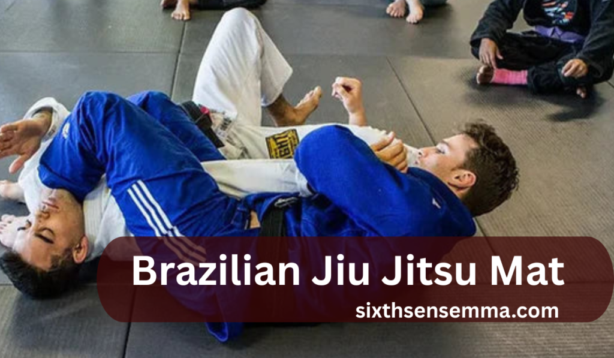
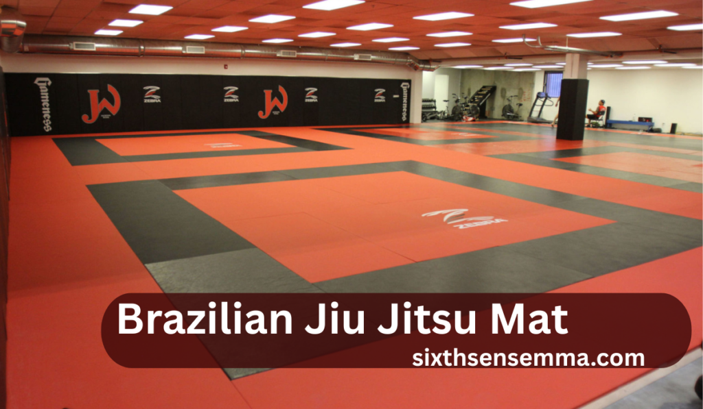
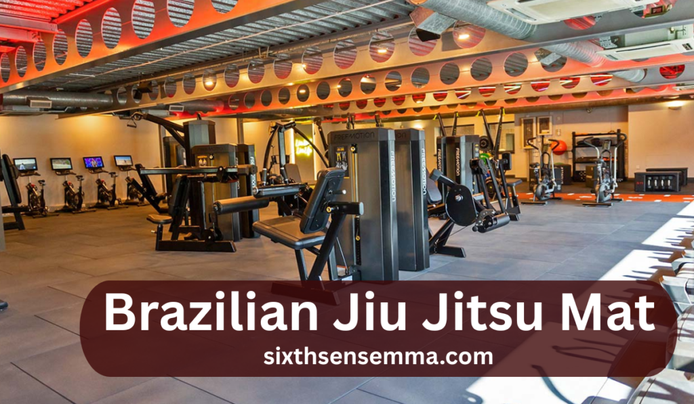

Brazilian Jiu Jitsu Mat: 5 Reasons Gyms Choose Premium Mats

Introduction
From the core foundation of every take down, roll, slam or throw in Brazilian Jiu Jitsu mat, the mat provides more than mere support. The quality of a mat is often overlooked, but its impacts on performance, injury mitigation, and general training experience can be substantial. As more facility owners seek to improve safety levels and appeal to their facilities, there is a notable shift towards high quality matting.
Many compelling reasons are pushing this shift to premium Brazilian Jiu Jitsu mats such as lower maintenance and cleaning requirements, improved durability, alongside the existing appeal these mats carry.
Understanding What’s Matting?
Gym owners continue to look for new ways to improve the efficacy Fof the training environment. Perhaps the most underestimated yet extremely important is the Brazilian Jiu Jitsu Mat/BJJ mat. These mats have a direct impact on how athletes train, fall, and recover. For gym owners, the choice of mat can significantly impact satisfaction and injury prevention.

Information about Brazilian Jiu Jitsu Mat
Inclined Physical Activities, including throws, grappling, ground fighting, and fall movements in Brazilian Jiu Jitsu mat training is as challenging as it is rigorous. It underscores the need for padding and cushioning coupled with a thick protective mat to absorb shock, prevent joint damage, bruising, and sprain injuries. Although weakly padded mats for BJJ, wrestling, and other martial arts may seem affordable at first glance, gyms quickly realize that the costs snowball when one factors in replacement mat expenses from wear-and-tear while demanding high performance from the gym
Summary of Differences Between Standard vs. Premium Mats for Brazilian Jiu Jitsu
| Feature | Standard Mats | Premium Mats |
|---|---|---|
| Shock Absorption | Low to Moderate | High |
| Durability | Wears out quickly | Long-lasting |
| Comfort Level | Basic cushioning | Maximum comfort |
| Hygiene & Surface Finish | Difficult to clean | Antimicrobial, easy-to-clean |
| Cost Over Time | Frequent replacements | One-time investment, long-term use |
Detailed Explanation
When paying for high-quality mats, gyms are not just buying material, they are investing into their peace of mind. These mats generally come with engineered foam layers designed to reduce any stress endured on the knees, backs and elbows. The grip and surface stability also aids in maintaining form during take downs and submission holds. Premium mats are designed to withstand hundreds of training hours without getting compressed, torn, or slippery.
Reasons Gyms Prefer Premium Brazilian Jiu Jitsu Mats
Reduced Risk of Training Injuries
Prominent mats are constructed with a multi-layered foam systems that absorbs impact much better than lower options. This reduces the chances of sprains, bruises, and joint stress when athletes are thrown or swept. A solid grip texture on the surface helps in keeping the feet planted during complex movements, therefore mini missing accidental slips. In this way, operators raise the level of security students undergo at the facility while reducing the possibility of physical mishaps.
Reduced Maintenance and Replacement Costs Over Time
While they do bear a heavier cost at first, high assigned grade value mats tend to be more durable. Their resistance against wear and tear, pressure points, along with surface tearing greatly increases their ability to withstand damages and need repairs much less frequently. These mats serve a lot of people for daily rigorous sessions and do not show signs of deteriorating making them, in fact, more economical over a period of time in contrast to inexpensive alternatives which are often in need of replacement.
Visual Appeal and Presentation of the Facility
The training surface of a gym depicts it’s standards. High end mats leave behind the cripples for scratches and tear on the floors and bring forth a clean, intact, modern work area. Eye-catching and appealing consistencies in color, smooth seams, and shaped uniform padding all raise the quality of a premium martial arms space. From the moment they step on the floor, prospective members, who can be greatly do influence by this polish, may form an impression about the level of professionalism.
Greater Practice Precision Through Enhanced Technical Execution
While executing sharp movements, a mat that can hold its shape under strain is supportive With dependable grabbing points and constant cushioning, practitioners can freely perform counter throws, rolls, and shifts without needing to acclimatize with uneven and slippery areas.The newer surface’s characteristics allow for enhanced performance levels and enables coaches to concentrate on teaching techniques instead of being limited by the surface’s conditions.
Reduced Cleanliness Issues and Improved Surface Maintenance
Cleanliness is an issue even more problematic when there are several users who share a certain blotting surface. Antimicrobial mold-resistant vinyl mats offered by more premium brands help in eradicating mold, mildew, and bacteria. Because of their non-porous outer layer, standard disinfectants are sufficient to clean them. This creates a healthier training environment and limits the spread of skin infections, which increases trust in the cleanliness reputation of the facility among members.
Practical Use in Gym
Pro Training Center:
Most training academies of advanced stages buy premium mats for their obvious professional appearance while ensuring safety.
Community Gyms:
Even some of the smaller gyms have reported a reduction in injuries and favorable feedback from students after these gyms shifted to better quality mats.
Martial Arts Schools:
Instructors appreciate the concentration noticed among students while training on more effective movement and cushion supportive surfaces.
Branding Benefits of Premium Mats in a Gym
A mat of premium quality is a reflection of premium branding of a gym. The moment a new member steps into the gym, they feel the difference and during the first contact with the stick-out mat. That first encounter usually determines customer loyalty as well as the free publicity that comes from satisfied customers.

Customer Loyalty & Satisfaction
The degree of comfort and security offered determines whether the students pursue further training. Client retention is often improved when gyms upgrade their mats to higher quality ones.
Choosing Suitable Mats for Sale Brazilian Jiu Jitsu
While searching for sale Brazilian jiu jitsu mats, keep in mind the following features:
• Thickness (1.5 to 2 inches is ideal)
• Bottom layers that prevent slippage
• Vinyl coating on edges
• Solid interlocking pieces
These features affect more than just the durability of these mats; they affect safety as well as the training experience.
Advice for Maintenance & Installation
To gain the maximum benefits from the Brazilian Jiu Jitsu mat, proper installation is essential. Always install the mats on a floor that is even and dry. This will eliminate the chance of movement or training slippage. When placing interlocking designs or roll out mats, ensure that every edge is turned to eliminate seams or gaps because they block movement.
For the mats and floors, develop a specific routine for cleaning them. Only use disinfectants specifically for vinyl or foam-based flooring to prevent damage from harsh chemicals. Focus on areas that get a lot of use after sessions to help reduce sweat as well as bacteria.
Moreover, avoid pushing or pulling substantial weights over the mat. Not only will this cause scratches to the surface, but it will also damage the foam underneath the mat thereby compromising safety and functionality.
Warranty and Support
When purchasing premium Brazilian Jiu Jitsu mats, it is likely that some of the advantages would go beyond the product. Dependable suppliers will almost always have improved warranties that offset negative aspects, like material damage, stitching detachment, and foam collapse. These guarantees give gym owners extra peace of mind.
Customer service is crucial as well. Well-known sellers give an aided hand post-sale in the form of installation tips, replacement, or product return if things don’t turn out as expected. When purchasing anything, make sure there are unambiguous guidelines and a proactive support center available.
ALSO READ THIS BLOG : How Martial Arts for Adults Empowers You Today
Real Insights from Gym Owners
The day-to-day life of gym operators provides valuable context on the benefits of spending more on good quality mats.
After changing the mats, you could almost feel the energy shift in the room. Students both felt safe and free to move around.”
The speed of daily clean up went up. We now use less cleaning materials, and the smell in the room is better after classes.”
At first glance, the price seemed high, but considering how long I’ve had them, it’s worth it since the mats are holding up strong.”
The testimonials mention increased training morale, effortless cleaning, and exceptional durability being the primary features offering tangible benefits.
Where To Buy Quality Brazilian Jiu Jitsu Mats
When looking to purchase mats, make sure you do not only look at the price. Check if the supplier has a clear description of the product that includes foam density, surface thickness, and surface area. These specifications also reflect the trust the seller has in their products.
Study rating and testimonials to establish satisfaction and credibility over time. Go for those vendors who give out safety certification like antimicrobial protectant or slip-resistance grade. Furthermore, consider sellers who have reasonable policies regarding returns and/or exchanges because they will help protect your interests should your requirements change after installation.
Conclusion
The choice of mat for your gym speaks volumes about the standards in your establishment. For those priorities of comfort, safety, and longevity, premium mats will always be the right decision. Although the upfront costs are higher, the benefits are measured by reduced injuries, extended mat life, and smiling athletes.
FAQ’s
A Jiu-Jitsu mat is known as a BJJ mat, grappling mat or tatami mat. These mats are custom made to cushion impacts as well as provide non-slip surfaces for ground fighting and throws.
BJJ mats are made from high-density foam and durable vinyl covers, which is one of the reasons why they are so expensive. They are also frequently coated with anti-microbial materials. These mats need to be heavy impact resistant, able to withstand wear-and-tear, and athlete safe, making them a costly necessity for gyms.
The biggest weakness in BJJ is the emphasis on ground fighting due to its disadvantages in real world, multiple attackers, or weapon situations. Additionally, it does not compare to other martial arts in the striking techniques taught.
BJJ is widely regarded as one of the most physically demanding sports because of its complex techniques, long learning and mastering period, and its requirement for mental resilience and endurance. It is tough, but also rewarding at the same time.
Best flooring for BJJ is high dense EVA foam style tatami mats because of their non-slip nature. They are ideal for grapples and submission due to the excellent shock absorbing nature, grip, and hygiene.
According to the latest information, Keanu Reeves currently holds a white belt in Brazilian Jiu Jitsu. He has trained in BJJ as part of his movie preparation, especially for the John Wick films, but has not sought out any further competitive accolades.
In general, BJJ is considered to be safer than boxing due to a lower risk of sustaining head injuries. While BJJ does pose the risk of joint injuries, boxing unfortunately carries a greater threat of concussions and debilitating long-term damage to the brain due to the successive strikes.
The most difficult belt to achieve in BJJ is a black belt. Earning it requires more than 10 years of sustained training, as well as being proficient and experienced in competition. For this reason, it is held as one of the most revered belts in martial arts.
Train with us in Coppell
The first class is free. Shorts, a t-shirt and a water bottle. We lend the rest.
Book a free class